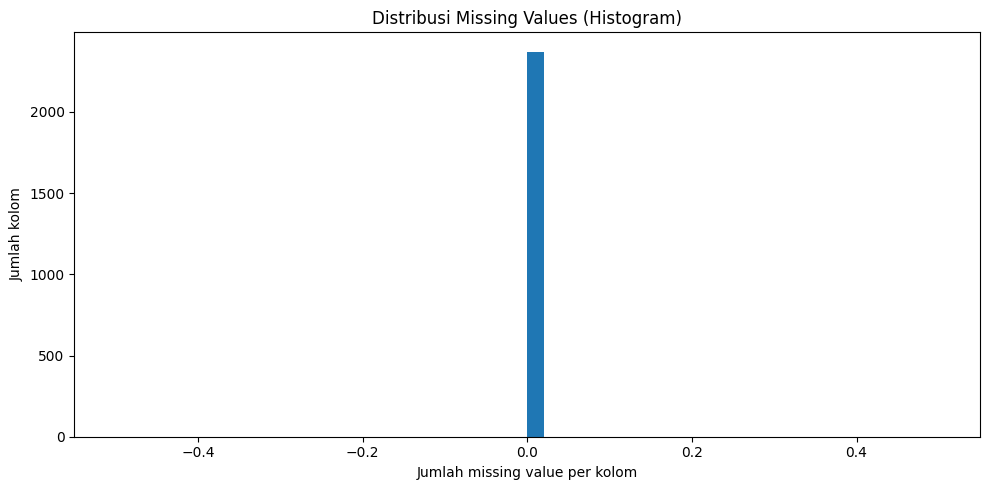
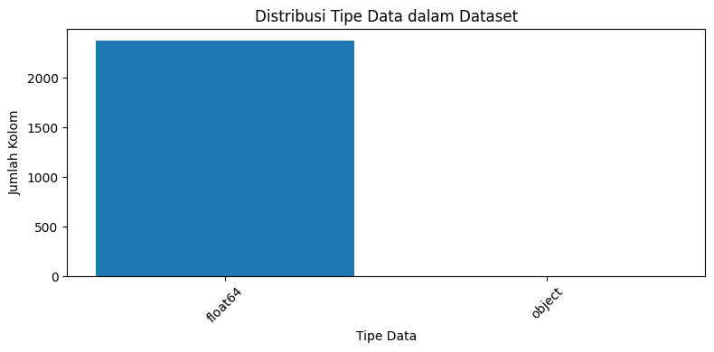
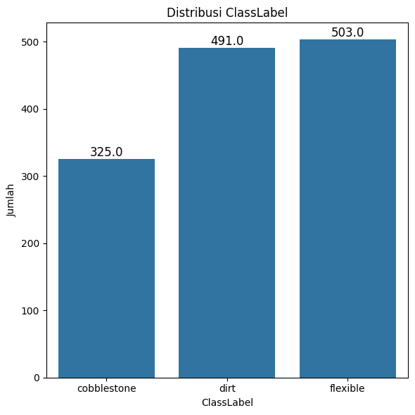
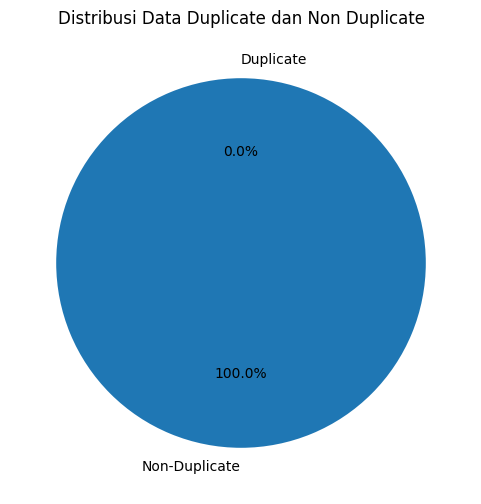
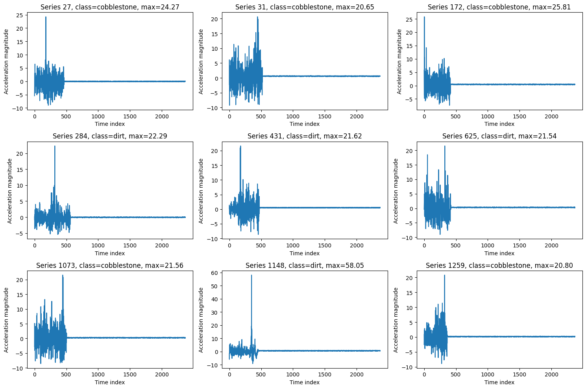

Data Understanding#
Sumber dan Gambaran Umum Data#
Dataset yang digunakan adalah AsphaltPavementType yang berasal dari :
Paper: Souza V.M.A. “Asphalt pavement classification using smartphone accelerometer and Complexity Invariant Distance” (Engineering Applications of Artificial Intelligence, 2018).
Repository: UEA/UCR Time Series Classification Repository / timeseriesclassification.com.
Data diambil di beberapa kota di Brazil Sao Carlos, Ribeirao Preto, Araraquara, and Maringa, selanjutnya cara pengambilan dataset ini dengan menggunakan Smartphone Android Samsung Galaxy A5 dan S7 yang dipasang di dalam mobil Hyundai i30 dekat dashboard dengan suction holder, sensor accelerometer HP merekam percepatan di tiga sumbu (X, Y, Z) saat mobil berjalan di berbagai jenis permukaan jalan, aplikasi yang digunakan adalah Asfault untuk merekam data secara kontinu + label jenis permukaan jalan yang diisi oleh expert, kemudian Sinyal accelerometer (X, Y, Z) dikonversi menjadi satu time series univariat berupa magnitudo percepatan:
\(mag(t) = \sqrt{X(t)^2 + Y(t)^2 + Z(t)^2}\)
Kelas (label) yang tersedia:
flexible: jalan beraspal (flexible pavement)
cobblestone: jalan berbatu / paving / kotak-kotak
dirt road: jalan tanah
Ukuran Dataset
Total 1319 data dan masing-masing:
flexible : 503 kasus dirt : 491 kasus cobblestone : 325 kasus
Panjang time series bervariasi antara 66 - 2371 sampel, dengan sampling rate 100Hz
Struktur Data#
Format yang saya download .arff (Attribute Relation File Format) kemudian saya convert ke file dengan format csv berikut gambaran datasetnya.
import pandas as pd
import numpy as np
import matplotlib.pyplot as plt
import seaborn as sns
df = pd.read_csv("Datasets/AsphaltPavementType_combine.csv")
df
A module that was compiled using NumPy 1.x cannot be run in
NumPy 2.0.2 as it may crash. To support both 1.x and 2.x
versions of NumPy, modules must be compiled with NumPy 2.0.
Some module may need to rebuild instead e.g. with 'pybind11>=2.12'.
If you are a user of the module, the easiest solution will be to
downgrade to 'numpy<2' or try to upgrade the affected module.
We expect that some modules will need time to support NumPy 2.
Traceback (most recent call last): File "C:\Users\USERB-PC\AppData\Local\Programs\Python\Python39\lib\runpy.py", line 197, in _run_module_as_main
return _run_code(code, main_globals, None,
File "C:\Users\USERB-PC\AppData\Local\Programs\Python\Python39\lib\runpy.py", line 87, in _run_code
exec(code, run_globals)
File "C:\Users\USERB-PC\AppData\Roaming\Python\Python39\site-packages\ipykernel_launcher.py", line 18, in <module>
app.launch_new_instance()
File "C:\Users\USERB-PC\AppData\Local\Programs\Python\Python39\lib\site-packages\traitlets\config\application.py", line 1075, in launch_instance
app.start()
File "C:\Users\USERB-PC\AppData\Roaming\Python\Python39\site-packages\ipykernel\kernelapp.py", line 739, in start
self.io_loop.start()
File "C:\Users\USERB-PC\AppData\Local\Programs\Python\Python39\lib\site-packages\tornado\platform\asyncio.py", line 211, in start
self.asyncio_loop.run_forever()
File "C:\Users\USERB-PC\AppData\Local\Programs\Python\Python39\lib\asyncio\base_events.py", line 596, in run_forever
self._run_once()
File "C:\Users\USERB-PC\AppData\Local\Programs\Python\Python39\lib\asyncio\base_events.py", line 1890, in _run_once
handle._run()
File "C:\Users\USERB-PC\AppData\Local\Programs\Python\Python39\lib\asyncio\events.py", line 80, in _run
self._context.run(self._callback, *self._args)
File "C:\Users\USERB-PC\AppData\Roaming\Python\Python39\site-packages\ipykernel\kernelbase.py", line 545, in dispatch_queue
await self.process_one()
File "C:\Users\USERB-PC\AppData\Roaming\Python\Python39\site-packages\ipykernel\kernelbase.py", line 534, in process_one
await dispatch(*args)
File "C:\Users\USERB-PC\AppData\Roaming\Python\Python39\site-packages\ipykernel\kernelbase.py", line 437, in dispatch_shell
await result
File "C:\Users\USERB-PC\AppData\Roaming\Python\Python39\site-packages\ipykernel\ipkernel.py", line 362, in execute_request
await super().execute_request(stream, ident, parent)
File "C:\Users\USERB-PC\AppData\Roaming\Python\Python39\site-packages\ipykernel\kernelbase.py", line 778, in execute_request
reply_content = await reply_content
File "C:\Users\USERB-PC\AppData\Roaming\Python\Python39\site-packages\ipykernel\ipkernel.py", line 449, in do_execute
res = shell.run_cell(
File "C:\Users\USERB-PC\AppData\Roaming\Python\Python39\site-packages\ipykernel\zmqshell.py", line 549, in run_cell
return super().run_cell(*args, **kwargs)
File "C:\Users\USERB-PC\AppData\Local\Programs\Python\Python39\lib\site-packages\IPython\core\interactiveshell.py", line 3048, in run_cell
result = self._run_cell(
File "C:\Users\USERB-PC\AppData\Local\Programs\Python\Python39\lib\site-packages\IPython\core\interactiveshell.py", line 3103, in _run_cell
result = runner(coro)
File "C:\Users\USERB-PC\AppData\Local\Programs\Python\Python39\lib\site-packages\IPython\core\async_helpers.py", line 129, in _pseudo_sync_runner
coro.send(None)
File "C:\Users\USERB-PC\AppData\Local\Programs\Python\Python39\lib\site-packages\IPython\core\interactiveshell.py", line 3308, in run_cell_async
has_raised = await self.run_ast_nodes(code_ast.body, cell_name,
File "C:\Users\USERB-PC\AppData\Local\Programs\Python\Python39\lib\site-packages\IPython\core\interactiveshell.py", line 3490, in run_ast_nodes
if await self.run_code(code, result, async_=asy):
File "C:\Users\USERB-PC\AppData\Local\Programs\Python\Python39\lib\site-packages\IPython\core\interactiveshell.py", line 3550, in run_code
exec(code_obj, self.user_global_ns, self.user_ns)
File "C:\Users\USERB-PC\AppData\Local\Temp\ipykernel_8760\291784089.py", line 3, in <module>
import matplotlib.pyplot as plt
File "C:\Users\USERB-PC\AppData\Local\Programs\Python\Python39\lib\site-packages\matplotlib\__init__.py", line 158, in <module>
from . import _api, _version, cbook, _docstring, rcsetup
File "C:\Users\USERB-PC\AppData\Local\Programs\Python\Python39\lib\site-packages\matplotlib\rcsetup.py", line 27, in <module>
from matplotlib.colors import Colormap, is_color_like
File "C:\Users\USERB-PC\AppData\Local\Programs\Python\Python39\lib\site-packages\matplotlib\colors.py", line 56, in <module>
from matplotlib import _api, _cm, cbook, scale
File "C:\Users\USERB-PC\AppData\Local\Programs\Python\Python39\lib\site-packages\matplotlib\scale.py", line 22, in <module>
from matplotlib.ticker import (
File "C:\Users\USERB-PC\AppData\Local\Programs\Python\Python39\lib\site-packages\matplotlib\ticker.py", line 138, in <module>
from matplotlib import transforms as mtransforms
File "C:\Users\USERB-PC\AppData\Local\Programs\Python\Python39\lib\site-packages\matplotlib\transforms.py", line 49, in <module>
from matplotlib._path import (
---------------------------------------------------------------------------
AttributeError Traceback (most recent call last)
AttributeError: _ARRAY_API not found
---------------------------------------------------------------------------
ImportError Traceback (most recent call last)
Cell In[1], line 3
1 import pandas as pd
2 import numpy as np
----> 3 import matplotlib.pyplot as plt
4 import seaborn as sns
6 df = pd.read_csv("Datasets/AsphaltPavementType_combine.csv")
File ~\AppData\Local\Programs\Python\Python39\lib\site-packages\matplotlib\__init__.py:158
154 from packaging.version import parse as parse_version
156 # cbook must import matplotlib only within function
157 # definitions, so it is safe to import from it here.
--> 158 from . import _api, _version, cbook, _docstring, rcsetup
159 from matplotlib.cbook import sanitize_sequence
160 from matplotlib._api import MatplotlibDeprecationWarning
File ~\AppData\Local\Programs\Python\Python39\lib\site-packages\matplotlib\rcsetup.py:27
25 from matplotlib import _api, cbook
26 from matplotlib.cbook import ls_mapper
---> 27 from matplotlib.colors import Colormap, is_color_like
28 from matplotlib._fontconfig_pattern import parse_fontconfig_pattern
29 from matplotlib._enums import JoinStyle, CapStyle
File ~\AppData\Local\Programs\Python\Python39\lib\site-packages\matplotlib\colors.py:56
54 import matplotlib as mpl
55 import numpy as np
---> 56 from matplotlib import _api, _cm, cbook, scale
57 from ._color_data import BASE_COLORS, TABLEAU_COLORS, CSS4_COLORS, XKCD_COLORS
60 class _ColorMapping(dict):
File ~\AppData\Local\Programs\Python\Python39\lib\site-packages\matplotlib\scale.py:22
20 import matplotlib as mpl
21 from matplotlib import _api, _docstring
---> 22 from matplotlib.ticker import (
23 NullFormatter, ScalarFormatter, LogFormatterSciNotation, LogitFormatter,
24 NullLocator, LogLocator, AutoLocator, AutoMinorLocator,
25 SymmetricalLogLocator, AsinhLocator, LogitLocator)
26 from matplotlib.transforms import Transform, IdentityTransform
29 class ScaleBase:
File ~\AppData\Local\Programs\Python\Python39\lib\site-packages\matplotlib\ticker.py:138
136 import matplotlib as mpl
137 from matplotlib import _api, cbook
--> 138 from matplotlib import transforms as mtransforms
140 _log = logging.getLogger(__name__)
142 __all__ = ('TickHelper', 'Formatter', 'FixedFormatter',
143 'NullFormatter', 'FuncFormatter', 'FormatStrFormatter',
144 'StrMethodFormatter', 'ScalarFormatter', 'LogFormatter',
(...)
150 'MultipleLocator', 'MaxNLocator', 'AutoMinorLocator',
151 'SymmetricalLogLocator', 'AsinhLocator', 'LogitLocator')
File ~\AppData\Local\Programs\Python\Python39\lib\site-packages\matplotlib\transforms.py:49
46 from numpy.linalg import inv
48 from matplotlib import _api
---> 49 from matplotlib._path import (
50 affine_transform, count_bboxes_overlapping_bbox, update_path_extents)
51 from .path import Path
53 DEBUG = False
ImportError: numpy.core.multiarray failed to import
Eksplorasi Data#
1. Informasi Dasar Data#
print("=== HEAD DATA ===")
print(df.head())
print("\n=== INFO DATA ===")
print(df.info())
print("\n=== DESKRIPSI STATISTIK (ringkas, 5 kolom pertama) ===")
print(df.describe().iloc[:, :5])
=== HEAD DATA ===
TimeSeriesData_0 TimeSeriesData_1 TimeSeriesData_2 TimeSeriesData_3 \
0 -2.876570 1.663488 -4.498386 3.488434
1 -0.701747 -0.570766 0.566515 -0.218081
2 4.369829 -3.141377 3.529192 2.660682
3 8.916818 -3.653964 -3.222407 5.952949
4 2.233004 0.050001 -2.284447 -1.813584
TimeSeriesData_4 TimeSeriesData_5 TimeSeriesData_6 TimeSeriesData_7 \
0 0.395251 -3.587129 0.773357 -0.915250
1 1.199675 2.872561 1.940022 -2.274027
2 2.462394 -1.882157 0.104404 0.942166
3 -2.532802 -1.536643 2.157628 0.213207
4 2.641198 -1.083767 2.177665 -0.227288
TimeSeriesData_8 TimeSeriesData_9 ... TimeSeriesData_2362 \
0 2.573000 1.361841 ... -0.053895
1 1.609701 4.039853 ... -0.032685
2 1.283458 -3.968304 ... 0.472872
3 -0.088351 2.634485 ... 0.084240
4 -1.730810 1.752036 ... 0.023642
TimeSeriesData_2363 TimeSeriesData_2364 TimeSeriesData_2365 \
0 0.036566 -0.031380 0.075436
1 -0.029768 -0.018517 0.107980
2 0.495197 0.335800 0.503290
3 -0.015055 0.062965 -0.027785
4 -0.023909 -0.093946 0.022844
TimeSeriesData_2366 TimeSeriesData_2367 TimeSeriesData_2368 \
0 -0.011254 -0.049133 0.024650
1 0.081965 0.092394 0.068861
2 0.559216 0.552964 0.396256
3 0.127377 0.109734 0.051033
4 0.023458 0.025328 -0.062764
TimeSeriesData_2369 TimeSeriesData_2370 ClassLabel
0 -0.054421 0.021338 cobblestone
1 -0.019790 0.017132 cobblestone
2 0.528568 0.570236 cobblestone
3 0.078114 0.051622 cobblestone
4 -0.055489 -0.072873 cobblestone
[5 rows x 2372 columns]
=== INFO DATA ===
<class 'pandas.core.frame.DataFrame'>
RangeIndex: 1319 entries, 0 to 1318
Columns: 2372 entries, TimeSeriesData_0 to ClassLabel
dtypes: float64(2371), object(1)
memory usage: 23.9+ MB
None
=== DESKRIPSI STATISTIK (ringkas, 5 kolom pertama) ===
TimeSeriesData_0 TimeSeriesData_1 TimeSeriesData_2 TimeSeriesData_3 \
count 1319.000000 1319.000000 1319.000000 1319.000000
mean 0.007146 -0.002606 -0.082418 -0.142575
std 2.079385 2.031884 1.962595 2.141794
min -7.512546 -8.523067 -8.998474 -9.244137
25% -1.069132 -1.086715 -1.029844 -1.145584
50% -0.031147 -0.036134 -0.084427 -0.158216
75% 0.982069 0.953952 0.949531 0.956830
max 11.101545 9.942422 9.109397 8.321178
TimeSeriesData_4
count 1319.000000
mean 0.022140
std 2.317607
min -8.882876
25% -1.054940
50% -0.058779
75% 1.041706
max 25.806197
2. Missing Value#
missing = df.isna().sum()
plt.figure(figsize=(10,5))
plt.hist(missing, bins=50)
plt.xlabel("Jumlah missing value per kolom")
plt.ylabel("Jumlah kolom")
plt.title("Distribusi Missing Values (Histogram)")
plt.tight_layout()
plt.show()

2. Tipe data#
dtype_counts = df.dtypes.value_counts()
plt.figure(figsize=(8, 4))
plt.bar(dtype_counts.index.astype(str), dtype_counts.values)
plt.xlabel("Tipe Data")
plt.ylabel("Jumlah Kolom")
plt.title("Distribusi Tipe Data dalam Dataset")
plt.xticks(rotation=45)
plt.tight_layout()
plt.show()

3. Distribusi Label/Class#
class_counts = df["ClassLabel"].value_counts()
print(class_counts)
plt.figure(figsize=(6,6))
ax = sns.countplot(x=df["ClassLabel"])
for p in ax.patches:
height = p.get_height()
ax.annotate(f'{height}',
(p.get_x() + p.get_width()/2., height),
ha='center', va='bottom', fontsize=12)
plt.title("Distribusi ClassLabel")
plt.xlabel("ClassLabel")
plt.ylabel("Jumlah")
plt.tight_layout()
plt.show()
ClassLabel
flexible 503
dirt 491
cobblestone 325
Name: count, dtype: int64

4. Duplikasi Data#
duplicates = df.duplicated().sum()
non_duplicates = len(df) - duplicates
labels = ['Non-Duplicate', 'Duplicate']
values = [non_duplicates, duplicates]
plt.figure(figsize=(6, 6))
plt.pie(values, labels=labels, autopct='%1.1f%%', startangle=90)
plt.title("Distribusi Data Duplicate dan Non Duplicate")
plt.show()

5. Deteksi Outlier#
X = df.drop(columns=['ClassLabel'])
y = df['ClassLabel']
X_desc = X.describe()
print(X_desc.loc[['min', 'max', 'mean', 'std']])
TimeSeriesData_0 TimeSeriesData_1 TimeSeriesData_2 TimeSeriesData_3 \
min -7.512546 -8.523067 -8.998474 -9.244137
max 11.101545 9.942422 9.109397 8.321178
mean 0.007146 -0.002606 -0.082418 -0.142575
std 2.079385 2.031884 1.962595 2.141794
TimeSeriesData_4 TimeSeriesData_5 TimeSeriesData_6 TimeSeriesData_7 \
min -8.882876 -9.092468 -9.007875 -7.980434
max 25.806197 15.908705 8.933173 11.176892
mean 0.022140 0.012053 -0.032798 0.007534
std 2.317607 2.197334 2.066168 2.039411
TimeSeriesData_8 TimeSeriesData_9 ... TimeSeriesData_2361 \
min -7.984612 -7.113500 ... -0.441485
max 15.543681 11.548522 ... 0.738541
mean 0.070531 0.006348 ... 0.012271
std 2.098344 2.065511 ... 0.154596
TimeSeriesData_2362 TimeSeriesData_2363 TimeSeriesData_2364 \
min -0.455851 -0.451983 -0.464488
max 0.713958 0.772266 0.899784
mean 0.012768 0.011754 0.010929
std 0.152981 0.153917 0.152934
TimeSeriesData_2365 TimeSeriesData_2366 TimeSeriesData_2367 \
min -0.489134 -0.463592 -0.440971
max 0.743954 0.636523 0.903060
mean 0.011631 0.012626 0.012347
std 0.153037 0.155005 0.155411
TimeSeriesData_2368 TimeSeriesData_2369 TimeSeriesData_2370
min -0.442209 -0.484497 -0.466564
max 0.672683 0.782990 0.670921
mean 0.011004 0.012005 0.012397
std 0.152911 0.156733 0.152569
[4 rows x 2371 columns]
X_arr = X.to_numpy(dtype=float)
row_max = X_arr.max(axis=1)
row_min = X_arr.min(axis=1)
row_std = X_arr.std(axis=1)
row_mean = X_arr.mean(axis=1)
print(pd.Series(row_max).describe())
print(pd.Series(row_std).describe())
count 1319.000000
mean 7.236235
std 4.480004
min 1.230292
25% 3.271269
50% 6.893314
75% 10.057863
max 58.054914
dtype: float64
count 1319.000000
mean 0.814430
std 0.464988
min 0.171744
25% 0.321558
50% 0.848287
75% 1.148016
max 2.065046
dtype: float64
upper = 20.24
out_idx = np.where(row_max > upper)[0]
print("Jumlah kandidat outlier:", len(out_idx))
print("Index contoh:", out_idx)
Jumlah kandidat outlier: 9
Index contoh: [ 27 31 172 284 431 625 1073 1148 1259]
sample_idx = out_idx[:9]
rows, cols = 3, 3
fig, axes = plt.subplots(rows, cols, figsize=(15, 10))
for ax, i in zip(axes.ravel(), sample_idx):
ax.plot(X_arr[i])
ax.set_title(f"Series {i}, class={y.iloc[i]}, max={row_max[i]:.2f}")
ax.set_xlabel("Time index")
ax.set_ylabel("Acceleration magnitude")
plt.tight_layout()
plt.show()
